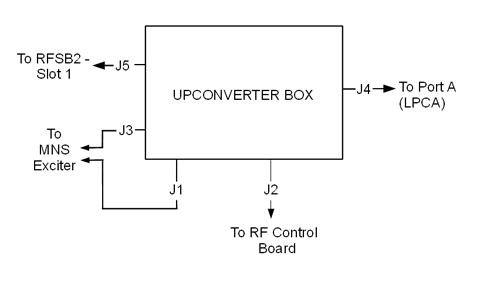

Operating Documentation
Direction 5670006, Rev# 1
Discovery MR750w GEM Service Methods
Module Version 3.0, Version Date 10/16/08
Operating Documentation |
| Required Persons | Preliminary Reqs | Procedure | Finalization |
|---|---|---|---|
| 1 | 5 mins | 30 mins | 10 mins |
| Item | Qty | Effectivity | Part# | Manufacturer | |
|---|---|---|---|---|---|
| Non-Magnetic Tool Kit | 1 | - | 5112581 | - | |
| Item | Qty | Effectivity | Part# | Manufacturer | |
|---|---|---|---|---|---|
| MNS Upconverter Module | 1 | - | 5189655-2 | - | |
Remove both of the rear pedestal side covers (see Illustration 1).
Illustration 1: Remove Rear Pedestal Covers

Locate the upconverter box, mounted on the front of the re-route box in the rear pedestal (see Illustration 2). Disconnect cable connections to the upconverter box (viewing from front of the rear pedestal) (see Illustration 3).
Illustration 2: Upconverter Box

Illustration 3: Upconverter Cables

| ||||
| Some cables are ferrous and are attracted to the magnet. | ||||
| Disconnect and connect cables carefully. | ||||
| When disconnecting cables, ensure ends do not become attached to the magnet. |
Remove the upconverter box from the rear pedestal and carefully move it away from the magnet.
| NOTE: | Place upconverter box outside of magnet room before completing replacement procedure. |
Mount new upconverter box. For ease of installation in a confined space, follow these suggested steps:
Attach one mounting bracket to the re-route box and the other mounting bracket directly to the MNS upconverter.
Approach the opposite side of the rear pedestal from where the mounting was attached and slide in the MNS upconverter. Fully attach the MNS upconverter to the re-route box.
Reconnect cables to upconverter. See Illustration 3 and Table 1 for cable connections.
| NOTE: | On the RF control board, some cables may need to be disconnected in order to properly connect the MNS upconverter cables. Reconnect these cables once the upconverter is fully installed. |
Table 1: MNS Upconverter Cable Connections
| Cable Run Number | J# on MNS Upconverter | To be connected to | Description |
| M1308 | J3 | J31 of Pen Cabinet wall | MNS LO |
| M1309 | J1 | J33 of Pen Cabinet wall | MNS Loopback |
| M3356 | J2 | J11 - Slot11 board of RF Hub | Power and Controls for MNS Upconverter |
| [None] | J4 | LPCA Connector A | 8W8 Rx signal input from connector A |
| [None] | J5 | J8 of Re-route Box | 8W8 Upconverter signal output |
Replace rear pedestal side covers (see Illustration 1).
| ||||
| Whenever the PEN cabinet LOTO is removed, the Exciter board requires 20 minutes of power-up time before scanning. | ||||
Perform the Multi Nuclear Spectroscopy (MNS) Functional Checks.